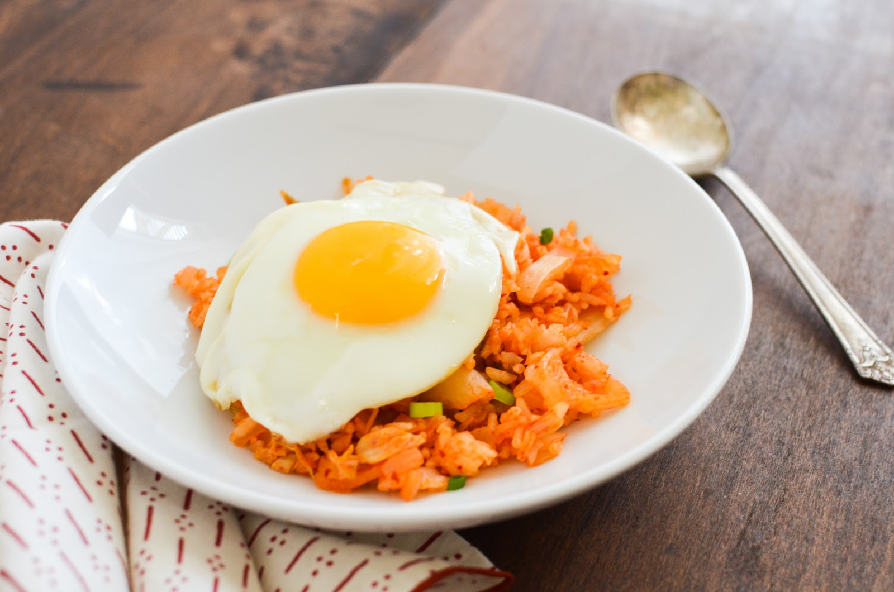

Kimchi Bokum Bap

Kimchi Fried Rice
Country of Origin : Korea
A quick and easy Korean favorite. Great for a quick lunch.
Ingredients List
- 1 cup shiitake mushrooms, sliced
- 2 tbsp scallions, chopped
- 1 tbsp olive oil
- 1 cup kimchi, chopped
- ½ - 1 cup kimchi juice
- 3 cups cooked white sticky rice
- 1 tbsp sesame seeds
- 1 tbsp sesame oil
- cheese or panfried egg, optional
Directions
- Heat oil in large pan over medium-high heat. Add mushrooms and scallions, 3-5 minutes.
- Add Kimchi, cook another 3-5 minutes.
- Add Kimchi juice and rice, stir.
- Add seseme oil and seeds along with a pinch of salt.
- Optionally, sprinkle cheese on top and serve with a fried egg.
Notes
This Korean staple goes well with a mild cheese such as Mozzarella. A can of tuna or ham cubes also add well to Kimchi Bocum Bap.